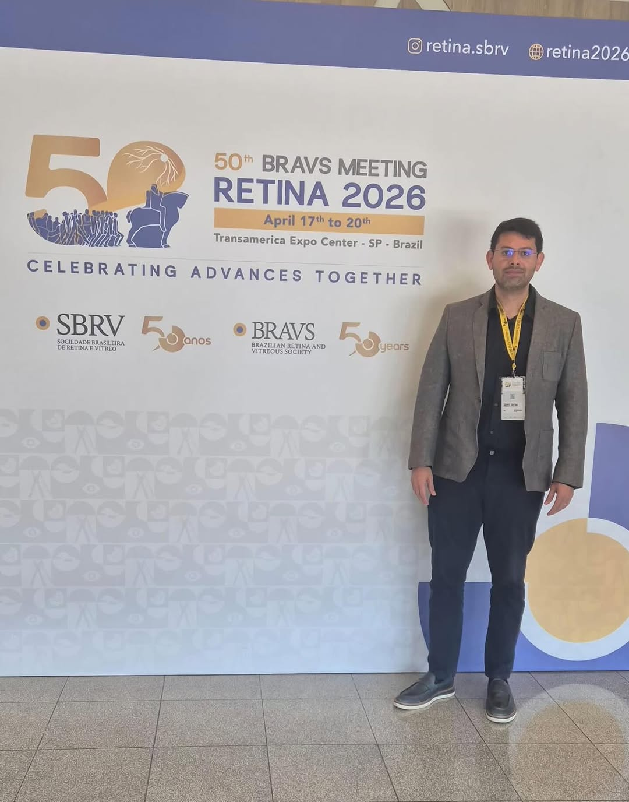
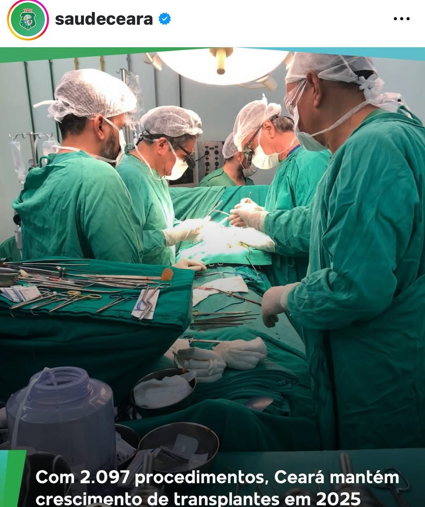

Cirurgia moderna de catarata com implante de lente intraocular para recuperação da visão.
A cirurgia de catarata remove o cristalino opacificado e implanta uma lente intraocular artificial no seu lugar. O procedimento é realizado por facoemulsificação, técnica moderna que fragmenta a catarata com ultrassom através de micro-incisão. A cirurgia é rápida, feita com anestesia em gotas, e o paciente recebe alta no mesmo dia. A recuperação visual começa já nas primeiras semanas, e o resultado é permanente.


Exame completo com avaliação da catarata e grau de comprometimento visual.
Biometria ocular e outros exames para calcular o grau da lente intraocular a ser implantada.
Facoemulsificação com implante de lente intraocular. Procedimento rápido e seguro.
Uso de colírios conforme orientação médica e consultas de retorno para acompanhamento.
Consulte convênios e SUS
Valores podem variar de acordo com a complexidade do caso. Agende uma avaliacao personalizada.
Aceitamos convênios e atendimento SUS pelo programa Fila Zero
A cirurgia de catarata é dolorosa?
Não. O procedimento é feito com anestesia local em gotas e o paciente não sente dor. A recuperação também é tranquila.
Quanto tempo leva a cirurgia?
A cirurgia de catarata dura em média 15 a 20 minutos. O paciente recebe alta no mesmo dia.
Quando posso voltar às atividades normais?
Atividades leves podem ser retomadas em 2 a 3 dias. Esforços físicos intensos devem ser evitados por 3 a 4 semanas.
A catarata pode voltar?
Não. Uma vez removida, a catarata não volta. Em alguns casos, pode ocorrer opacificação da cápsula posterior, corrigida com laser.
Agende uma consulta de avaliação com nossa equipe especializada em saúde ocular e transplantes de córnea no Cariri.
Agende sua consulta